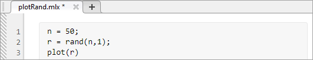

Save and Back Up Code
You can save your files in the Editor and Live Editor using several methods. You also can create backup copies of your files. Creating backup copies of your files ensures that you have a known working version of the files before making changes to them, and can also be useful for recovering lost changes after a system problem.
Depending on your needs, you can also control how the files you save are encoded and cached.
Save Code
When you modify a file in the Editor or the Live Editor, MATLAB® indicates that there are unsaved changes in the file by displaying an asterisk (*) next to the file name in the document tab.

To save the file, go to the Editor or Live Editor tab, and in the File section, click Save.
To change the name, location, or type of a file, select Save > Save As. For example, to save a live script as a plain code file
(.m), on the Live Editor tab, in the
File section, select Save > Save As. In the dialog box that appears, select MATLAB Code files
(UTF-8) (*.m) as the Save as type and click
Save.
Back Up Code
You can create backup copies of your files in the Editor and Live Editor. Creating a backup copy of a file ensures that you have a known working version of the file before making changes to it. To create a backup copy of a file, on the Editor or Live Editor tab, in the File section, select Save > Save Copy As.
In addition, when you modify files in the Editor and Live Editor, MATLAB automatically creates backup copies of the files. If you lose changes to your files due to system problems, you can use the automatically created backup copies of the files to recover the changes.
By default, MATLAB saves a backup copy of a modified file every five minutes using the
same file name but with an .asv extension. For example,
filename.m would have a backup file name of
filename.asv. If you lose changes to your file, you can
recover the unsaved changes by opening the backup copy of the file,
filename.asv, and saving it as
filename.m.
To change how and when MATLAB saves backup copies of files, on the Home tab, in the Environment section, click Settings. Then, select MATLAB > Editor/Debugger > Saving.
You can specify:
How often to save backup copies of the files you are editing.
What file extension to use when creating backup copies of files.
Where to save backup copies of files.
Whether to automatically delete backup copies of files when you close the corresponding source file in the Editor.
For more information about the available options, see Editor/Debugger Saving Settings.
Before R2025a: Backup settings are located under MATLAB > Editor/Debugger > Backup Files.
Recommendations on Saving Files
MathWorks® recommends that you save files that you create to a folder outside the
matlabroot folder tree, where
matlabroot is the folder returned when you type
matlabroot in the Command Window. Similarly, when you edit
files that you get from MathWorks, save your edited version outside the
matlabroot folder tree. If you save your files in the
matlabroot folder tree, they can be overwritten when
you install a new version of MATLAB.
If you do save files in the matlabroot folder tree, you
may need to take extra steps for your changes to take effect. At the beginning of
each MATLAB session, MATLAB loads and caches in memory the locations of files in the
matlabroot folder tree. Therefore, if you add,
remove, or make changes to files in the matlabroot folder
tree using an external editor or file system operations, you must update the cache
so that MATLAB recognizes the changes you made. For more information, see Toolbox Path Caching in MATLAB.
File Encoding
As of R2020a, when the Editor saves a new MATLAB code file that has a .m extension, such as a script
or a function, it uses UTF-8 without a byte-order-mark (BOM). The Editor saves
existing files with their current encoding unless a different one is selected from
the Save As dialog. For example, to save a file using a legacy locale-specific
encoding for compatibility with an earlier release of MATLAB, on the Editor tab, in the
File section, select Save > Save as. In the dialog box that appears, select the desired encoding from the
Save as type options.
The current encoding is displayed next to the file name in the Editor status bar or, if the Editor Window is docked, the Desktop status bar.